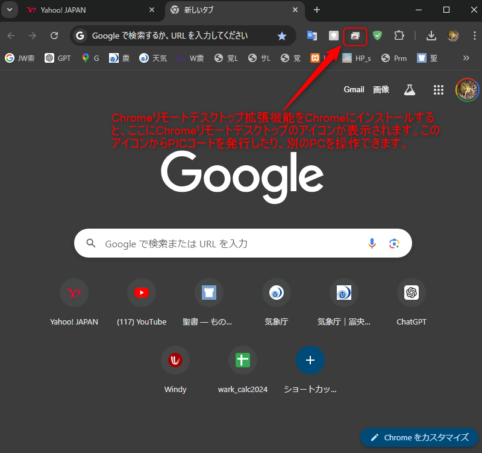

A会場からB会場のパソコンを操作する手順
1-1. Google Chromeにログイン
- B会場のパソコンでGoogle Chromeを起動します。
- 右上のプロフィールアイコンをクリックし、Googleアカウントにログインします。
- ログインに使用するメールアドレスは、A会場のパソコンでも同じものを使用します。
1-2. Chrome リモート デスクトップをセットアップ
-
Google Chromeで、Chrome リモート デスクトップにアクセスします。
- 「リモートアクセスのセットアップ」をクリックし、拡張機能をインストールします。
- リモートアクセスのためにパソコンに名前をつけます（例: "B会場PC"）。
- 6桁以上のPINコードを設定します（リモート接続時に必要です）。
1-3. リモートアクセスの有効化
- 「リモートアクセスの有効化」をクリックします。これでB会場のパソコンがリモートアクセス可能になります。
2-1. Google Chromeにログイン
- A会場のパソコンでGoogle Chromeを起動します。
- 右上のプロフィールアイコンをクリックし、B会場のパソコンと同じGoogleアカウントにログインします。
2-2. Chrome リモート デスクトップにアクセス
-
Google Chromeで、Chrome リモート デスクトップにアクセスします。
- 「リモートデバイス」のリストにB会場のパソコン（例: "B会場PC"）が表示されます。
- 「B会場PC」を選択します。
- B会場で設定したPINコードを入力します。
- 接続が確立されると、A会場のパソコンからB会場のWindows 11パソコンを操作できるようになります。
- リモートセッションが終了したら、B会場のパソコンでスクリーンロックを有効にすること。
- 両方のパソコンで二段階認証を有効にして、Googleアカウントを保護すること。
- B会場の担当者にパソコン起動およびWindowsにログインまでやってもらいます。
-
A会場のChromeを起動し、Chrome内に表示されているChromeリモートデスクトップのアイコンをクリック、
もしくはChrome リモート デスクトップにアクセスします。

-
A会場のChromeリモートデスクトップを起動したら、「B会場」を選択し接続します。
以上でA会場からB会場のパソコンを操作できるようになります。
- ホーム
- プログラミングの覚書
- Chromeリモートデスクトップの使い方